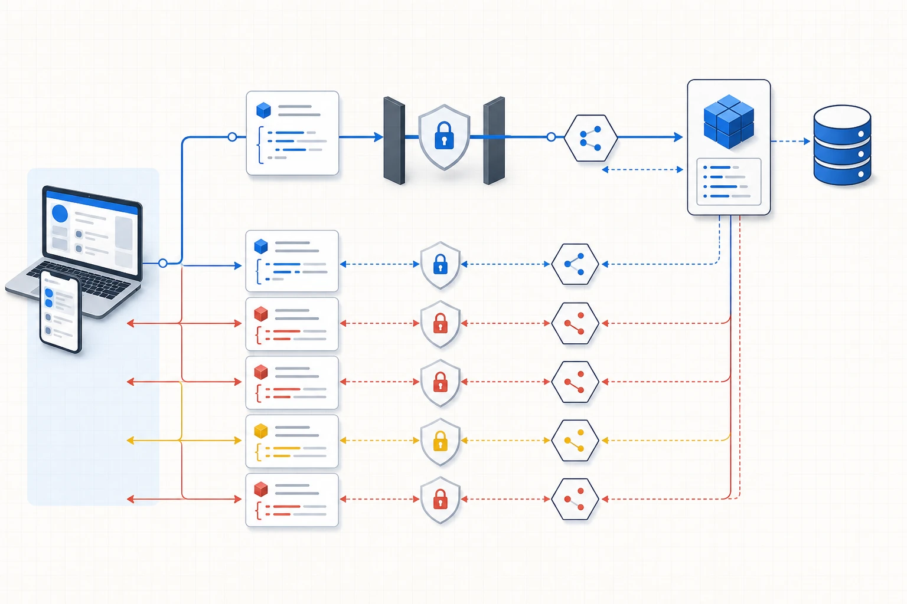

El primer hito comprueba coherencia
El primer hito reúne las decisiones construidas durante las unidades anteriores. Cada estudiante o equipo presenta un caso, identifica una decisión y explica qué evidencia necesita. También muestra el grano de sus fuentes, un modelo inicial y una arquitectura proporcional.
La calidad se observa en la coherencia entre componentes:
decisión → KPI → fuente → grano → modelo → arquitectura → trade-offLa decisión establece qué debe elegir una persona responsable. El KPI representa un aspecto relevante de ese objetivo. La fuente contiene los registros necesarios y declara sus límites. El grano explica qué significa cada fila. El modelo organiza entidades y relaciones. La arquitectura describe cómo circulan los datos. El trade-off justifica una elección y explicita qué propiedad se resigna.
Un ejemplo permite comprobar la cadena. Si el caso busca decidir qué familias de Faro Sur requieren revisión de descuentos, la persona o el equipo puede utilizar margen porcentual y venta neta. La fuente de líneas de pedido contiene precio, cantidad, descuento y costo. El grano es una línea. El modelo relaciona pedidos, clientes, líneas y productos. Una arquitectura por lotes semanal resulta consistente con una revisión comercial semanal. El trade-off acepta información con algunos días de antigüedad a cambio de una operación simple.
Una cadena se debilita cuando cambia de problema a mitad del recorrido. Un KPI de entrega puntual requiere fechas prometidas y reales. Una arquitectura basada únicamente en ventas carece de esa evidencia. El hito permite detectar ese desajuste antes de construir consultas y visualizaciones.
Evidencias esperadas
La entrega incluye el canvas de decisión, la ficha del KPI y un diagrama de arquitectura. El modelo identifica entidades, claves y cardinalidades. Cada fuente tiene una frase de grano y una descripción de alcance. La defensa incluye al menos un trade-off escrito como comparación entre alternativas.
La comprensión individual se observa mediante preguntas distribuidas. En un trabajo grupal, una persona puede explicar la decisión y otra el modelo, pero todas deben comprender la cadena completa. En un trabajo individual, la misma persona conecta cada artefacto con la decisión y conserva un registro de sus revisiones.
Una API como contrato entre sistemas
Una API, sigla de Application Programming Interface, define cómo un sistema solicita datos o acciones a otro. El contrato especifica qué capacidades existen, qué información debe enviar el cliente y qué respuesta puede esperar.

En una API web, el cliente realiza una solicitud y el servidor la procesa. Un endpoint identifica una capacidad mediante una dirección. El método HTTP expresa el tipo de operación. GET suele utilizarse para leer. Otros métodos permiten crear, reemplazar o modificar recursos según el diseño del servicio.
Una consulta de lectura puede verse así:
GET https://api.ejemplo.com/v1/eventos?desde=2026-09-01&pagina=1La URL identifica el endpoint /v1/eventos. Los parámetros desde y pagina restringen la respuesta. Los headers transportan metadatos, como el formato aceptado o un token. El body contiene datos enviados cuando la operación lo necesita. El servidor devuelve un código de estado, headers y una respuesta.
El contrato vive en la documentación y en el comportamiento observado. Leer una API exige identificar el grano de la respuesta. Un endpoint de pedidos puede devolver una fila por pedido. Otro puede entregar eventos de estado. Usar ambos como si representaran la misma unidad produciría métricas incompatibles.
La estructura de una solicitud HTTP
Una solicitud combina método, URL, headers y parámetros. La biblioteca de Python requests permite expresar esa estructura de manera legible:
Recorrido completo de una solicitud API
Pregunta de lectura¿Qué debe registrar el cliente para repetir, diagnosticar y validar una consulta?
Construir la solicitud
GET /pedidos
params: fecha, página
GET /pedidos?desde=2026-08-01Agregar contexto
Headers declaran formato; body se usa cuando corresponde.
Autenticar
Token fuera del notebook y permiso mínimo.
Respetar el límite
Contar solicitudes y aplicar espera ante 429.
Servicio y datos
La API valida, consulta su base y arma la respuesta.
Interpretar el estado
200 éxito · 400 formato · 401 identidad · 403 permiso
404 recurso · 429 límite · 500 servicio
Completar la colección
Seguir next_page hasta que no queden páginas.
Validar y guardar
Comprobar campos y tipos; registrar timestamp y hash.
Una integración reproducible conserva la solicitud, interpreta el código de estado, recorre todas las páginas, valida la estructura recibida y guarda el snapshot utilizado por el análisis.
import requests
url = "https://api.ejemplo.com/v1/eventos"
params = {"desde": "2026-09-01", "pagina": 1}
headers = {"Accept": "application/json"}
respuesta = requests.get(url, params=params, headers=headers, timeout=30)
print(respuesta.status_code)El timeout limita cuánto tiempo espera el cliente. La ejecución debe revisar el estado antes de procesar el contenido. Los códigos agrupan clases de resultado:
| Código | Significado habitual | Acción de diagnóstico |
|---|---|---|
| 200 | solicitud procesada | validar esquema y contenido |
| 400 | parámetros inválidos | revisar documentación y valores enviados |
| 401 | autenticación ausente o inválida | comprobar credencial y formato |
| 403 | permiso insuficiente | revisar alcance autorizado |
| 404 | recurso inexistente | verificar endpoint e identificador |
| 429 | límite de uso alcanzado | respetar espera y política de reintento |
| 500 | falla del servidor | registrar el incidente y reintentar con criterio |
Un código 200 confirma que el servidor procesó la solicitud; todavía hace falta controlar la respuesta. Puede llegar una lista vacía porque el filtro excluyó todo, un esquema nuevo o una página parcial.
Paginación y límites de uso
Muchas APIs dividen una colección en páginas. La respuesta puede informar la página siguiente, un cursor o la cantidad total. El pipeline debe recorrer páginas hasta completar el período y debe detectar repeticiones.
Los límites de uso, llamados rate limits, restringen solicitudes por intervalo. Protegen el servicio y reparten capacidad. Un cliente responsable respeta el código 429, espera el período indicado y evita ciclos agresivos. La captura registra cuántas páginas recibió y cuántos elementos acumuló.
Autenticación y manejo de secretos
Una API pública puede permitir lectura sin credenciales. Otros servicios utilizan una API key, un token o un flujo OAuth. La credencial identifica al cliente y delimita permisos.
El secreto debe almacenarse fuera del notebook compartido. En Colab puede utilizarse el administrador de secretos o una variable de entorno configurada por cada persona. El código lee el valor durante la ejecución y evita imprimirlo.
import os
token = os.environ["API_TOKEN"]
headers = {"Authorization": f"Bearer {token}"}Los permisos se reducen al uso requerido. Una práctica de lectura utiliza una credencial de solo lectura. Una clave expuesta debe revocarse y rotarse. Ninguna persona o equipo incluye secretos en capturas, repositorios o entregas.
Las credenciales personales quedan fuera de los requisitos evaluables. El caso proporciona snapshots para que el aprendizaje pueda continuar aunque una API cambie o una persona carezca de acceso.
Del servicio vivo al snapshot reproducible
Una API viva cambia con el tiempo. Pueden agregarse registros, modificarse campos o interrumpirse el servicio. Un snapshot conserva la respuesta recibida en un momento y permite repetir el análisis.
La captura debería guardar:
| Metadato | Utilidad |
|---|---|
| fecha y hora de extracción | ubicar la vigencia del dato |
| endpoint y parámetros | reconstruir la solicitud |
| estado recibido | diagnosticar la ejecución |
| archivo de respuesta | preservar la evidencia |
| cantidad de registros | controlar completitud |
| versión o hash | detectar cambios |
| límites conocidos | declarar alcance |
La automatización de la captura y el análisis del snapshot son problemas diferenciables. Primero se obtiene una copia trazable. Después se inspecciona su estructura, se normaliza y se integra con otras fuentes. Esta separación reduce dependencias durante una práctica y permite investigar un error con la misma entrada.
En Faro Sur, una API logística ficticia puede entregar eventos de despacho. El snapshot conserva lo recibido. La capa raw mantiene esa estructura. staging convierte fechas y valida identificadores. Un mart calcula tiempos o cumplimiento.
Formatos de datos que aparecen en un pipeline
Un formato define cómo se codifica la información. La elección influye en portabilidad, tipos, tamaño y facilidad de consulta.
| Formato | Estructura habitual | Uso frecuente | Consideración |
|---|---|---|---|
| CSV | filas y columnas separadas por delimitador | intercambio tabular | tipos inferidos y esquema externo |
| XLSX | libro con hojas, celdas y fórmulas | revisión manual y entrega empresarial | ediciones difíciles de reproducir |
| JSON | objetos y listas anidadas | respuestas de API y configuración | requiere aplanar estructuras para tablas |
| Parquet | columnas tipadas y comprimidas | almacenamiento analítico | lectura eficiente por columnas |
| XML | etiquetas jerárquicas | integraciones y documentos formales | mayor verbosidad y esquemas propios |
CSV resulta conveniente para una tabla simple. Cada fila sigue el mismo conjunto de columnas, aunque el archivo por sí solo suele carecer de tipos explícitos. Parquet conserva tipos y estadísticas, y un motor puede leer únicamente las columnas necesarias. JSON representa jerarquías con naturalidad y por eso aparece con frecuencia en APIs.
La extensión no define el significado. Dos CSV pueden usar granos distintos. Dos respuestas JSON pueden organizar el mismo fenómeno con jerarquías incompatibles. El contrato de fuente debe acompañar al archivo.
Leer JSON
JSON representa valores mediante objetos, listas y tipos simples. Un objeto utiliza llaves y pares clave–valor. Una lista utiliza corchetes y conserva una secuencia. Los valores pueden ser texto, números, booleanos, null, otros objetos o listas.
{
"shipment_id": "S9001",
"order_id": "P100",
"status": "delivered",
"delivered_at": "2026-09-03T18:20:00Z",
"packages": [
{"package_id": "PK1", "weight_kg": 4.8},
{"package_id": "PK2", "weight_kg": 2.1}
]
}El objeto principal representa un despacho. La lista packages contiene dos bultos. Si se convierte esa lista en filas, el grano cambia de despacho a bulto. Los atributos del despacho pueden repetirse en cada fila. Esta transición anticipa los mismos controles de granularidad utilizados en un join.
En Python, respuesta.json() convierte una respuesta válida en diccionarios y listas. Antes de construir una tabla conviene inspeccionar claves, tipos y profundidad. Un valor null requiere una decisión de tratamiento. Una lista vacía tiene significado distinto de una clave ausente.
La normalización detallada de estructuras anidadas continúa en la siguiente parte de la unidad. Aquí alcanza con reconocer la jerarquía y declarar qué elemento se convertirá en fila.
Qué problema organiza Model Context Protocol
Model Context Protocol, abreviado MCP, define una forma común para que una aplicación de inteligencia artificial se conecte con capacidades externas. La versión de referencia utilizada en este capítulo es 2026-07-28. La aplicación puede descubrir herramientas disponibles, consultar recursos y acceder a plantillas declaradas por un servidor.
Cómo un host de IA descubre y ejecuta una capacidad MCP
Pregunta de lectura¿Qué mensajes y decisiones separan el pedido del usuario de la operación ejecutada?
Usuario
Formula una tarea y conserva la decisión final.
Host
Coordina interfaz, modelo, permisos y clientes.
Modelo
Interpreta el contexto y propone una capacidad.
Cliente MCP
Una conexión aislada por servidor.
Descubrimiento
server/discover → tools/list
server/discovertools/listCapacidades
tools ejecutan; resources aportan datos; prompts ofrecen plantillas.
Aprobación
El host revisa permisos, argumentos e impacto.
Ejecución
tools/call llega al servidor y luego a API, base o archivo.
tools/callTransporte
stdio para proceso local; Streamable HTTP para conexión remota.
Resultado y registro
Contenido, error, tiempo, servidor y decisión quedan trazables.
El host coordina la interacción y crea un cliente por servidor. El protocolo describe mensajes y capacidades; el transporte lleva esos mensajes por stdio local o Streamable HTTP remoto.
Fuentes técnicas: Model Context Protocol · Architecture (2026-07-28).La arquitectura distingue tres actores. El host es la aplicación de IA que coordina la experiencia y aplica permisos. El host crea un cliente MCP para cada conexión. El servidor MCP expone capacidades sobre una fuente o sistema.
usuario
↓
host de IA
├── cliente MCP A ↔ servidor de datos
└── cliente MCP B ↔ servidor documentalUn servidor puede ejecutarse localmente o de manera remota. La separación permite que el host gestione varias conexiones y mantenga límites entre ellas. El protocolo es sin estado: cada solicitud incluye en _meta la versión del protocolo y las capacidades relevantes, de modo que el servidor pueda interpretar el pedido sin depender de una sesión previa.
Capa de datos y transporte
La capa de datos utiliza mensajes JSON-RPC 2.0. Define la estructura de solicitudes, respuestas y notificaciones, además de las primitivas que pueden exponer clientes o servidores. Un servidor debe implementar server/discover, que informa identidad, versiones compatibles y capacidades. El cliente puede utilizar ese pedido antes de otras operaciones; también puede enviar una operación directamente y manejar un error de versión.
Después del descubrimiento general, el cliente consulta las primitivas que necesita. tools/list devuelve las herramientas y sus esquemas de entrada; resources/list y resources/templates/list describen recursos; prompts/list enumera plantillas. La ejecución de una herramienta utiliza tools/call. Esta separación permite inspeccionar qué está disponible antes de enviar argumentos o ejecutar una acción.
La capa de transporte lleva esos mensajes. stdio comunica procesos locales mediante entrada y salida estándar. Streamable HTTP permite conexiones remotas por HTTP. La elección depende del entorno y del modelo de seguridad.
Tools, resources y prompts
Un servidor MCP puede declarar tres primitivas principales:
| Primitiva | Qué expone | Ejemplo en Faro Sur |
|---|---|---|
| Tool | una acción ejecutable | consultar ventas por familia |
| Resource | datos o contexto legible | diccionario de vw_ventas |
| Prompt | una plantilla reutilizable | revisar una definición de KPI |
Una tool recibe argumentos definidos y ejecuta una operación. El host puede mostrar esos argumentos al usuario y solicitar aprobación. Una herramienta de lectura podría aceptar familia, fecha inicial y fecha final, ejecutar una consulta controlada y devolver resultados.
Un resource entrega contexto identificable mediante una URI. Puede contener documentación, un archivo o un esquema. El cliente consulta la lista y lee el recurso cuando lo necesita.
Un prompt ofrece una plantilla con parámetros. Sirve para estandarizar una interacción frecuente, como preparar una revisión de calidad o explicar un resultado para una audiencia.
El descubrimiento forma parte del protocolo. server/discover ofrece una vista general que puede almacenarse durante el tiempo indicado por el servidor; los métodos */list entregan el catálogo concreto de cada primitiva. El host conserva la responsabilidad de presentar permisos, validar argumentos y controlar invocaciones.
API y MCP dentro de la misma arquitectura
Una API expone capacidades de un sistema mediante su propio contrato. MCP estandariza cómo una aplicación de IA descubre y utiliza capacidades declaradas. Un servidor MCP puede llamar internamente a una API, consultar una base o leer archivos.
| Dimensión | API web | MCP |
|---|---|---|
| consumidor típico | aplicación o script | host de IA mediante un cliente MCP |
| descubrimiento | documentación y contrato del servicio | server/discover y métodos */list |
| unidades expuestas | endpoints y operaciones | tools, resources y prompts |
| transporte | habitualmente HTTP | stdio o Streamable HTTP |
| autenticación | definida por el servicio | depende del transporte y del despliegue |
| uso conjunto | puede proveer datos al servidor MCP | puede envolver una API existente |
La comparación ayuda a ubicar cada pieza. Una API logística puede entregar eventos. Un servidor MCP puede exponer una herramienta controlada que consulta esa API y devuelve un resumen apto para el host.
Permisos, contenido externo y trazabilidad
La integración con IA amplía la superficie de riesgo. Una herramienta con permiso de escritura puede modificar datos. Un recurso externo puede contener instrucciones maliciosas dirigidas al modelo. Una respuesta puede exponer información que el usuario actual carece de permiso para ver.
El diseño aplica mínimo privilegio. Las capacidades de lectura se separan de las de escritura. Los argumentos se validan y las operaciones sensibles requieren confirmación. El servidor filtra resultados según identidad y autorización. La ejecución registra herramienta, parámetros, momento y resultado.
En transportes remotos se utilizan mecanismos de autenticación adecuados al despliegue. En una demo local, el servidor se vincula a la interfaz local y expone una capacidad acotada. El ejercicio de Faro Sur utiliza datos sintéticos y consultas de solo lectura.
La trazabilidad conecta esta unidad con el protocolo de IA. Una respuesta puede indicar qué herramienta fue invocada y qué datos devolvió. La persona sigue verificando definiciones, grano y reconciliación.
APIs y MCP dentro del pipeline
Una API puede actuar como fuente. El pipeline captura sus respuestas, conserva snapshots y transforma el contenido. También puede funcionar como interfaz de consumo para entregar una métrica a otra aplicación.
MCP permite que un host de IA consulte un recurso o invoque una herramienta sobre ese pipeline. El protocolo agrega una interfaz de descubrimiento; la calidad del dato continúa dependiendo de contratos, modelos y controles.
API logística → snapshot JSON → staging → mart de servicio
↓
servidor MCP de solo lectura
↓
host de IAEn el ejemplo, el servidor MCP consulta un mart definido. El host recibe una salida controlada. La arquitectura conserva la fuente y las transformaciones necesarias para reproducir el resultado.
Criterios de evaluación del hito
La revisión del hito observa cinco dimensiones. Primero, la decisión debe ser específica y pertenecer a una persona con capacidad de actuar. Segundo, el KPI debe tener fórmula, grano y período. Tercero, las fuentes deben contener los campos necesarios y declarar límites. Cuarto, el modelo y la arquitectura deben corresponder con la escala del caso. Quinto, cada estudiante debe poder explicar un trade-off con sus consecuencias.
Los comentarios se registran como acciones para la siguiente versión. Un equipo puede necesitar reformular la decisión, reemplazar una fuente o corregir el grano. El hito cumple su función cuando reduce ambigüedad antes de avanzar hacia transformación y visualización.
Preguntas de comprobación
- ¿Qué diferencia existe entre un endpoint y un dataset conservado como snapshot?
- ¿Qué metadatos permiten repetir una extracción?
- ¿Dónde debe almacenarse una API key utilizada en una notebook?
- ¿Qué grano resulta al convertir la lista
packagesdel ejemplo en filas? - ¿Qué capacidades descubre un cliente MCP en un servidor?
- ¿Qué riesgo adicional aparece al habilitar una herramienta de escritura?
- ¿Qué evidencia del hito sigue siendo una hipótesis?
Alcance de la unidad
El núcleo comprende lectura de APIs, diagnóstico HTTP, manejo de secretos, snapshots, reconocimiento de formatos, estructura de JSON y arquitectura conceptual de MCP. La construcción de una API, OAuth completo, desarrollo de servidores MCP y normalización avanzada de JSON quedan para demostración o continuidad.